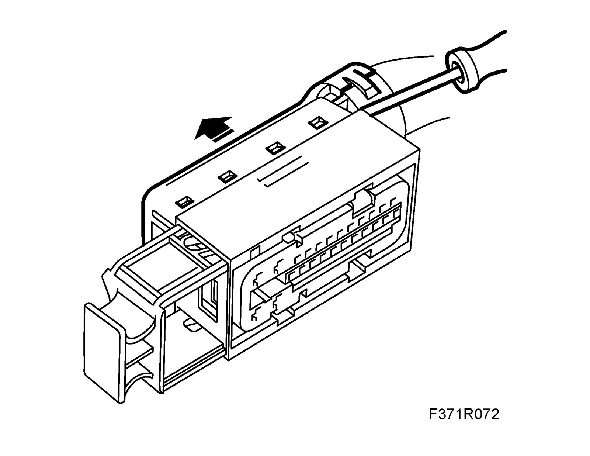
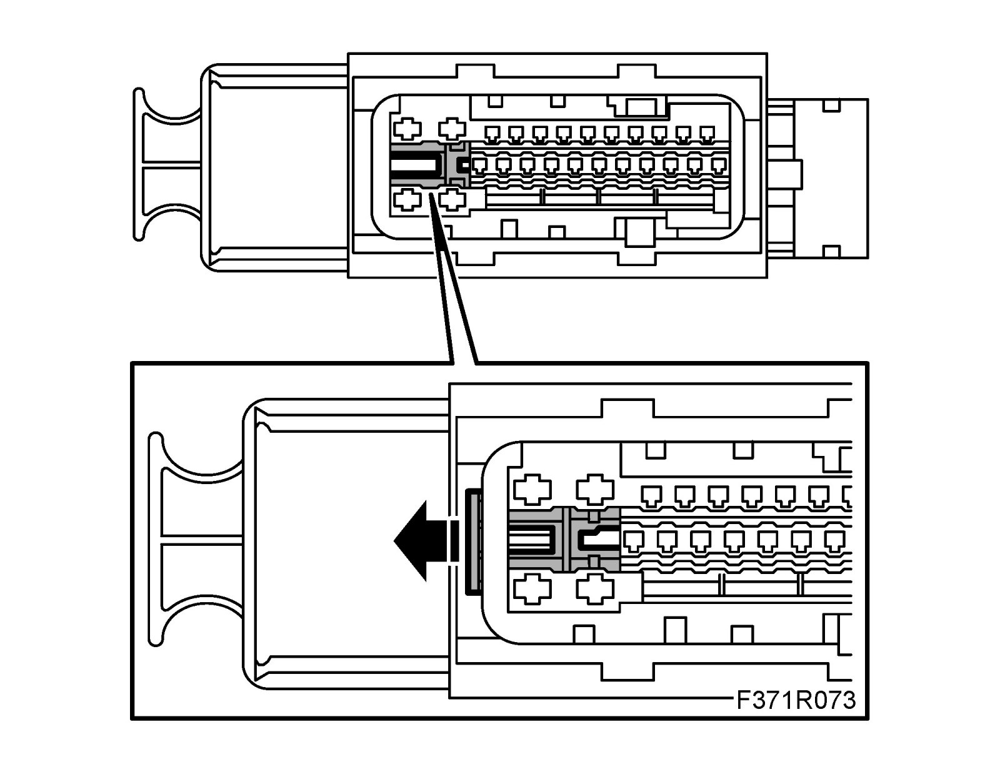
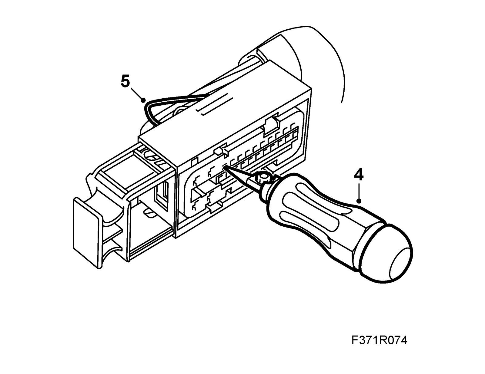
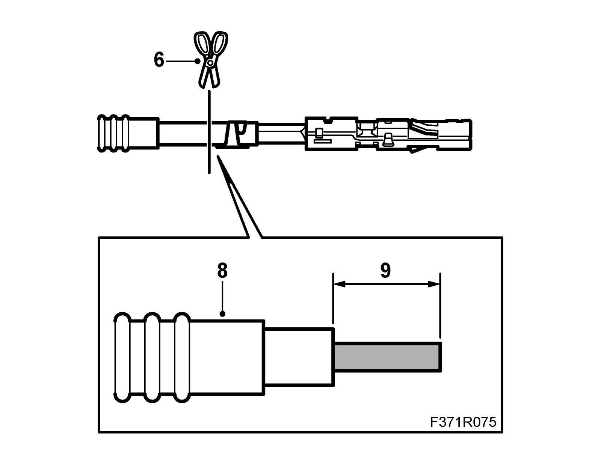
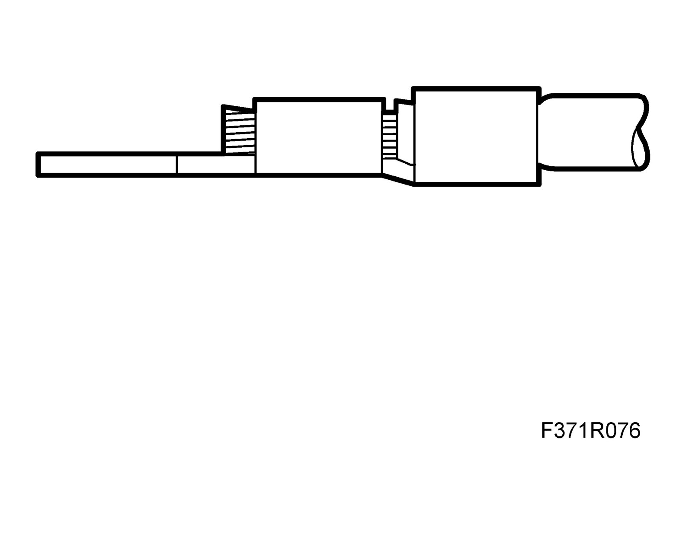
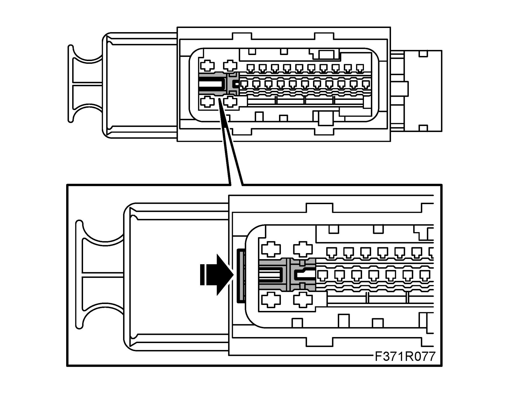
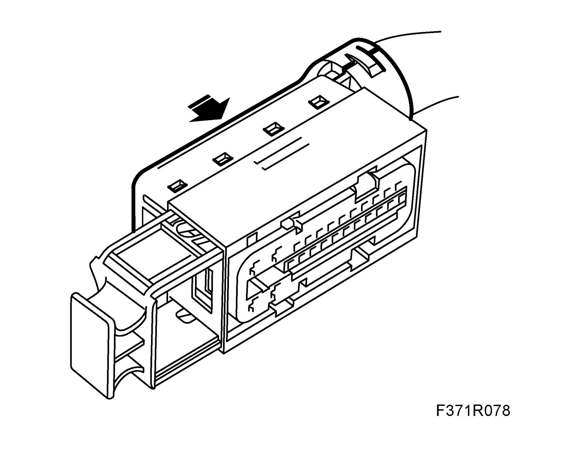
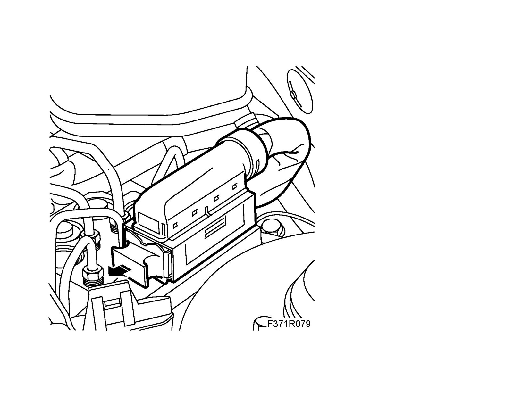

TCS (382)/ESP (671) Connector, Changing Sleeve
TCS (382)/ESP (671) connector, changing sleeveTo remove
Important
ESD-SENSITIVE COMPONENT
Earth yourself by touching the car body before plugging in / unplugging components. Do not touch the component pins. Read Before removing a control module before changing a control module.
1. Unplug the connector.
Changing sleeve
1. Remove the cover.

2. Cut the cable tie.
3. Loosen the secondary lock by pulling it out (about 2 mm) to the first notch.

4. Undo the sleeve lock by pressing in the sleeve removal tool (part no. 85 80 151).

5. Pull out the cable with the sleeve.
6. Cut the cable at the sleeve.

Note
For more information on fitting pins/sleeves, see Repairing the wiring diagram.
7. If the cable is not long enough, it must be spliced as follows:
7.1. Strip the insulation on the cables.
7.2. Fit a shrink hose with adhesive on the cable.
7.3. Fit the splice sleeve (0.5 - 1.0 mm2), use blue pliers from 86 12 939 Toolbox, wiring harness.
Note
Cables with 0.35 mm2 are placed together and crimped at both ends.
7.4. Place the shrink hose over the splice sleeve.
7.5. Heat the shrink hose to secure it.
8. Place the seal on the cable. Replace with a new one if necessary.
9. Strip 4 mm of the cable insulation.
10. Find the connector in question in the spare parts catalogue/EPC to obtain the part number of the sleeve (cable terminal) to be used.
11. Fit a new sleeve on the cable using the olive green pliers (0.35-0.75 mm2) from 86 12 939 Toolbox, wiring harness. Do not clamp the seal in the sleeve.
12. Make sure the stripped cable goes through all the clamped part of the sleeve and that the insulation is clamped securely.

13. Press the sleeve into the connector.
14. Check that the sleeve is locked securely.
15. Press the seal into the connector.
16. Make sure the new sleeve engages at the same depth as the other sleeves in the connector.
17. Press in the secondary lock.

18. Secure the cables with a cable tie.
19. Fit the cover.

20. Make sure the control module pins are straight.
Important
ESD-SENSITIVE COMPONENT
Earth yourself by touching the car body before plugging in / unplugging components. Do not touch the component pins. Read Before removing a control module before changing a control module.
To fit
1. Plug in the connector.

2. Clear all diagnostic trouble codes.
3. Perform a driving cycle, i.e. drive the car under varying loads and engine speeds for five minutes.
4. Read diagnostic trouble codes.